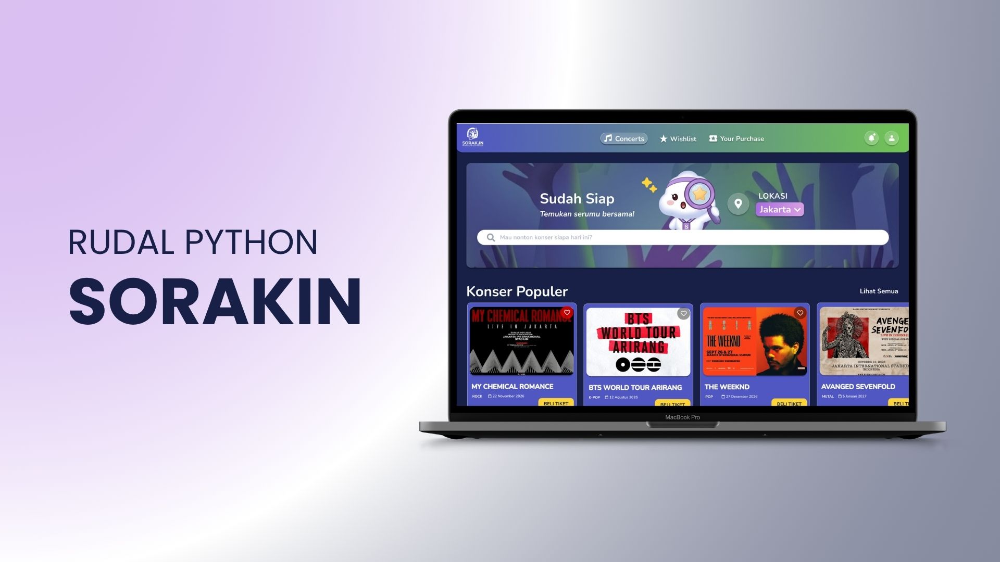

Connecting Tradition, Reviving the Economy.

Overview
KayuKita is an innovative platform designed to empower the local woodcraft industry by digitizing the ecosystem from upstream to downstream. I designed this application alongside Kathleen Klavinka and Leticia Michelle as part of the UCCD SixSeven team.
The project addresses a critical paradox: while Indonesia's furniture industry is projected to reach USD 9.1 billion by 2025, the primary industrial production capacity has dropped by 33% due to supply chain uncertainties and "The Lost Generation" phenomenon, where young people are leaving the craftsman profession. KayuKita acts as a digital integrator that shortens distribution chains to increase craftsmen's profit margins, while providing educational modules to revitalize the interest of the younger generation.
Problem
Local wood craftsmen are threatened by raw material scarcity, a lack of youth regeneration, and difficulties in independently marketing their products. Meanwhile, consumers face challenges in finding trusted craftsmen due to a lack of technical knowledge regarding wood quality and fair pricing.
Bridging the massive gap between the production capabilities of traditional craftsmen and the specific, modern demands of the market. The application must be lightweight and accessible for senior craftsmen with limited digital literacy, yet professional enough for modern buyers.
Creating an integrated 3-in-1 digital ecosystem: "Buat Kayu" for custom furniture orders, "Cari Kayu" for direct marketplace access, and "Tau Kayu" as a digital literacy center to educate users about Indonesian wood characteristics.
Process
KayuKita was developed using an iterative and human-centered Design Thinking methodology.
We conducted research through three approaches: "Looking In" via literature studies on the extinction threats to local crafts, "Looking Around" for market positioning, and "Looking Out" by interviewing local wood craftsmen to deeply understand their daily operations and marketing constraints.
We mapped out two main user segments via an empathy map: Mainstream (Local Wood Craftsmen, represented by Fadhiel Wibowo, a 29-year-old decorator) and Extreme (General Consumers, represented by Laras Nurdhaya, a 36-year-old full-time employee looking for custom furniture).
Using an Effort Impact Matrix, we prioritized high-impact features such as Buat Kayu, Cari Kayu, and Tau Kayu. We then built a cohesive design system using an earthy color palette and the Inter typeface to ensure readability.
We designed the mobile app prototype in Figma, developing high-fidelity screens for Onboarding, Login, the main Dashboard, the Cari Kayu marketplace, Buat Kayu custom bookings, Tau Kayu educational videos, and a dedicated registration flow for craftsmen.
During Usability Testing with Pak Fadhiel, a local craftsman, the visual design was praised for being clean and user-friendly. However, he provided a crucial piece of feedback: the necessity of a Dark Mode feature, as senior craftsmen often experience eye strain from bright screens during long durations.
Solution
Here is the interactive prototype for KayuKita, featuring the main dashboard, the marketplace, custom furniture booking, and the educational hub.
Reflection
Developing KayuKita taught me the importance of inclusive design when catering to a two-sided market. The testing session highlighted that accessibility features, such as Dark Mode for older craftsmen, are just as vital as functional capabilities in ensuring the platform is truly comfortable and empowering for all users.